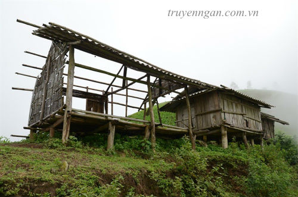

NGƯỜI CƯA BOM
Hòa là một cậu bé có đôi mắt to tròn nhưng hình hài vô cùng xấu xí. Thằng bé lớn lên ở một vùng nông quê nghèo nàn nên quanh quanh quẩn quẩn trong làng không ai không biết nó, nhất là lũ trẻ con. Cả làng cũng chỉ mình nó trông kì quặc như vậy, nên rồi có đứa nhỏ nào lại gần nó đâu. Mỗi ngày lủi thủi, nó chỉ chơi một mình.
Lạ càng thêm đáng sợ, bọn trẻ trong làng truyền tai nhau về sự rùng rợn ở nhà thằng Hòa. Có lần bọn nó còn góp tiền thật lớn rồi treo giải xem ai dám đến nhà thằng Hòa lấy ra một đồ vật thì được nhận số tiền đó. Tiền to, nhưng cả đám hô hào, đi được đến chân đồi cỏ bọn nó liền chạy mất dép. Nghe ra mới biết thằng Toàn to con nhất đám hô lớn "tao vừa thấy bóng ma cụt chân bây ơi" nên bọn nhỏ hơn sợ quá đến xém tè ra cả quần. Bởi vậy, chúng co chân co cẳng chạy toán loạn là chuyện đương nhiên.
Chuyện này khiến chúng sợ hãi đến mức khi nghe người lớn nhắc đến thì giống như đang nghe chuyện ma nửa đêm. Người lớn bàn chuyện thì đám nhỏ cũng không được ngồi gần. Chúng núp sau cánh cửa nghe chữ được chữ mất do đám súc vật nằm sau vườn nhà không ngừng phát ra những âm thanh ồn ào. Gà thì "cục cục" khi nằm chung một cái chuồng chật chội, vịt xiêm kêu "quạc quạc" vì chưa muốn ngủ do quá tham ăn mấy con mối cánh đậu dưới cái hố nước sũng bùn do trận mưa cách đây mấy ngày để lại.
Còn mấy con bò, tôi thật sự không thích cái âm thanh ken két nhai đi nhai lại đồ ăn ợ ra từ bụng chúng một tí nào. Thầy giáo dạy sinh bảo điều chúng làm rất tốt cho dạ dày, nhưng tôi thì thấy thật kinh khủng. Mấy con heo là ồn ào nhất, vừa tham ăn vừa tục uống, suốt ngày "ục ục" như thể chúng sắp chết đói đến nơi rồi. Quay lại chuyện người lớn kể, nghe chừng con Lan em gái tôi vừa nghe được hai từ "cụt chân", chắc chúng nghĩ hóa ra thằng Toàn thấy không sai, cái bóng ma cụt chân là có thật. Mới nghĩ đến đây, tóc gáy của đám nhỏ dựng hết lên, sóng lưng lạnh buốt, tôi thấy cả đám rùng mình rồi hét lên inh ỏi giống mấy con gà bị giật mình ngoài cái chuồng kia.
Người lớn biết bọn trẻ nghe lỏm không lo học bài, nạt cho một trận, cả đám về vị trí cũ im nhóc. Một mẫu giấy nhỏ truyền tay nhau, bọn trẻ lại lên lịch gì đó. Không cần đọc tôi cũng đoán được chúng lại bày nhau chơi gì đó ngoài đồi cỏ. Bọn này cả tin lắm, phải thứ gì chúng thấy tận mắt thì mới cho là thật còn những chuyện tôi kể chúng gạt phăng. Tôi chỉ biết lắc đầu mặc kệ. Bài vở của tôi nhiều gấp mấy tụi nhỏ, không rỗi hơi lo chuyện cho tụi nó.

Người lớn biết bọn trẻ nghe lỏm không lo học bài, nạt cho một trận, cả đám về vị trí cũ im nhóc. Một mẫu giấy nhỏ truyền tay nhau, bọn trẻ lại lên lịch gì đó. Không cần đọc tôi cũng đoán được chúng lại bày nhau chơi gì đó ngoài đồi cỏ. Bọn này cả tin lắm, phải thứ gì chúng thấy tận mắt thì mới cho là thật còn những chuyện tôi kể chúng gạt phăng. Tôi chỉ biết lắc đầu mặc kệ. Bài vở của tôi nhiều gấp mấy tụi nhỏ, không rỗi hơi lo chuyện cho tụi nó.
Hóa ra tụi nó hẹn nhau chơi trò du kích, điểm tập kết địch là nhà thằng Hòa. Bọn nó còn dùng cả bóng nước để làm bom phá địch, cả súng chuối với một ít mắt mèo phòng thân. Hoành tráng thế đấy, bọn nó sợ ngôi nhà thằng Hòa đến mức làm càng quá.
Thằng Toàn đâu, mày cầm súng với hai quả bom tiến lên phía trước đi chứ. Mày to con nhất. – Cái Lan nói trong một chút sợ hãi
Thôi thằng Toàn con trai nên dẫn đầu đi. Con gái ra trận dễ thua lắm. – Nguyên đám còn lại lao nhao nói xen vào.
Thằng Toàn thua thế, nó ngẫm trông mình cầm đầu cũng oai hùng nên tạo tư thế như tấm hình Thánh Gióng cầm gươm chỉ về phía trước hô lớn "tiến lên" như trong sách truyện của lớp hai. Cả đám chạy nhanh đến dưới chân đồi thì giảm tốc độ, đứa sau va vào đứa trước la oai oái. Gần đến điểm tập kết, đứa nào cũng có chút hoảng sợ, mấy đứa con gái run như cầy sấy. Nhìn nguyên đám người ngợm không ra gì, chúng hái cành tre với cành liễu nhét khắp người, giống kiểu hóa trang của bộ đội ngày xưa.
Còn bọn nó lượn lờ trên đồi cỏ, cỏ cao có hơn hai ngấn mà chúng hóa trang như vậy trông thật lố bịch. Cũng không thể trách bọn chúng được, bọn nó còn nhỏ mà. Ít ra thấy chúng thông thạo những chi tiết nhỏ như vậy mới biết chúng cũng am học lịch sử, cũng yêu thích bộ đội nhiều như thế nào.
Nguyễn Hòa